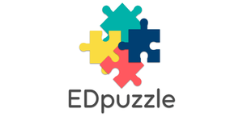

EDpuzzle es una herramienta online gratuita para editar y modificar videos propios o de Internet y convertirlos en videolecciones. EDpuzzle permite seleccionar videos educativos, editarlos, asignarlos a tus alumnos y comprobar que los entienden mediante preguntas insertas a lo largo del visionado. Esta herramienta puede ser de gran utilidad en todas las asignaturas y niveles educativos.
EDpuzzle permite buscar videos en las distintas fuentes que ofrece (YouTube, Khan Academy, TED, Vimeo, etc.) o subir a la plataforma un video propio, permite añadir voz (introducciones o explicaciones) en cualquier parte del video en la que se crea necesaria y añadir preguntas de opción múltiple a lo largo del video para comprobar que los alumnos comprenden lo que se está explicando.
Una vez que se haya terminado de editar el video, se lo puede compartir con los estudiantes y comprobar a través de una tabla de control quién lo ha visto y ha contestado las preguntas, así como las respuestas y resultados de las mismas [5].
A continuación se muestra un videotutorial del uso de esta herramienta: